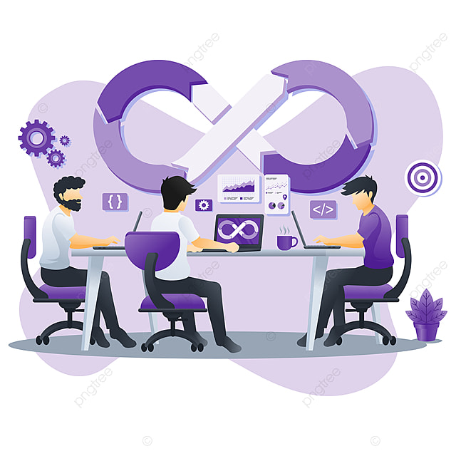

Автоматизация конкурентного анализа: как собирать данные об активности конкурентов
В быстро меняющемся мире ecommerce важно не только знать своих клиентов, но и понимать, что делают конкуренты. Кто снижает цены? Кто запускает акции? Кто вводит новые товары? Ручной мониторинг — неэффективен и не масштабируется. Выход — автоматизация конкурентного анализа. В этой статье разберём, как выстроить систему, которая будет сама собирать и обновлять данные о ваших конкурентах.
Что именно стоит отслеживать у конкурентов
- Цены и скидки по ключевым товарам и категориям;
- Изменения в ассортименте (новинки, исчезновение товаров);
- Рекламные активности (баннеры, email-рассылки, акции);
- Контент карточек товаров (фото, описание, теги);
- Отзывы, рейтинги, динамика продаж (если доступно);
- SEO-позиции и активность в соцсетях;
- Скорость логистики и доступность товаров.
Преимущества автоматизации
- Обновление данных в реальном времени или по расписанию;
- Устранение человеческого фактора и ошибок ручного сбора;
- Сравнение множества конкурентов одновременно;
- Экономия времени аналитиков и менеджеров;
- Интеграция данных в отчёты и BI-системы.
Как выстроить автоматизированный процесс
- Выбор источников: сайты конкурентов, маркетплейсы, соцсети, email-рассылки.
- Определение целевых данных: какие поля и параметры важны именно вам.
- Настройка парсинга: использовать готовые сервисы или писать свои скрипты для сбора.
- Очистка и нормализация данных: важно «почистить» дубли и привести всё к одному формату.
- Хранение и визуализация: базы данных, дашборды, автоматические уведомления.
Инструменты для автоматизации
- Парсеры и краулеры: Screaming Frog, Octoparse, Apify, Python + BeautifulSoup/Selenium;
- BI-платформы: Google Looker Studio, Power BI, DataLens для визуализации;
- Интеграции: Google Sheets API, Telegram-боты, Slack-уведомления;
- SaaS-сервисы: Priceva, Minderra, Competera — готовые решения для ecommerce;
- SEO-анализ: Serpstat, Semrush, Ahrefs для мониторинга поисковой активности.
Типичные ошибки
- Слишком частый сбор — может привести к блокировке IP;
- Игнорирование динамики — важно отслеживать изменения, а не только текущие значения;
- Отсутствие проверки качества данных — дубли, ошибки, пропуски;
- Отсутствие бизнес-выводов — сбор ради сбора ничего не даёт.
«Автоматизация конкурентного анализа — это не просто сбор данных, а постоянный канал бизнес-разведки» by: Colrose
Кейс: как ритейлер бытовой техники сэкономил миллионы
Компания мониторила цены у 12 конкурентов на 2 000 000 товаров. Вручную обновлять данные было невозможно. После автоматизации:
- Выявлено более 150 товаров, где цена была выше рынка — снижены и продажи выросли;
- Оптимизированы закупки по маржинальности и конкурентности;
- Рекламный бюджет перераспределён на позиции с высокой конкуренцией.
Результат — +9% к выручке и -15% к затратам за квартал.
Что делать бизнесу
- Выберите 3–5 ключевых конкурентов;
- Настройте регулярный сбор данных хотя бы по ценам и ассортименту;
- Визуализируйте отличия и тренды;
- Регулярно пересматривайте метрики, которые отслеживаете;
- Интегрируйте выводы в маркетинг и закупки.
Наша система мониторинга товаров автоматизирует сбор конкурентных данных, помогает выявлять слабые и сильные стороны предложений на рынке и превращать информацию в действия.